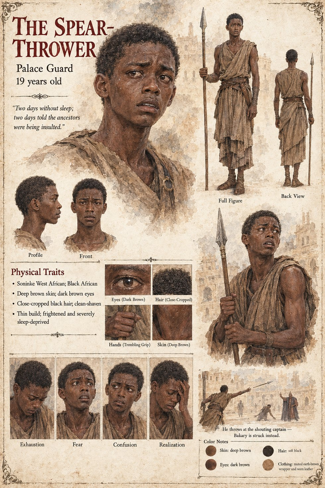

The Spear-Thrower
A boy of the palace guard on the wall · unnamed · 19 years old on his sheet
The guard on the wall, who were nineteen, and had not slept, and had been told for two days that the ancestors themselves were being insulted, watch Sekou's wardens come with the dry-mouthed fear of young men who have discovered that they are the last thing between a crowd and a door. A boy on the wall threw a spear at the captain. It misses Mory by a hand and hits Bakary, who is offering a water-skin. Nobody had meant it. That was, afterward, the only part of it anyone could agree on, and it helped no one.
The manuscript names him nowhere and gives him no words. It says only that he is a boy, and that the guard are nineteen; it does not say what becomes of him. The sheet's age of 19 follows the guard's. Its deep brown skin, dark brown eyes, close-cropped black hair, clean-shaven face, thin build, trembling grip and worn leather are its own; it prints a line, Two days without sleep; two days told the ancestors were being insulted., from the manuscript's description of the guard, and its panels are Exhaustion, Fear, Confusion and Realization. Its scene is He throws at the shouting captain — Bakary is struck instead.
“A boy on the wall threw a spear at the captain.”